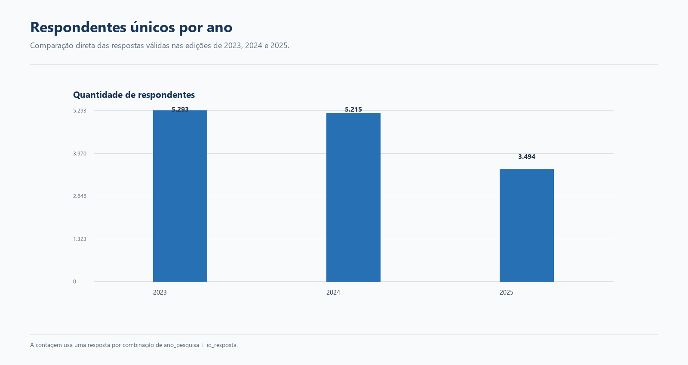
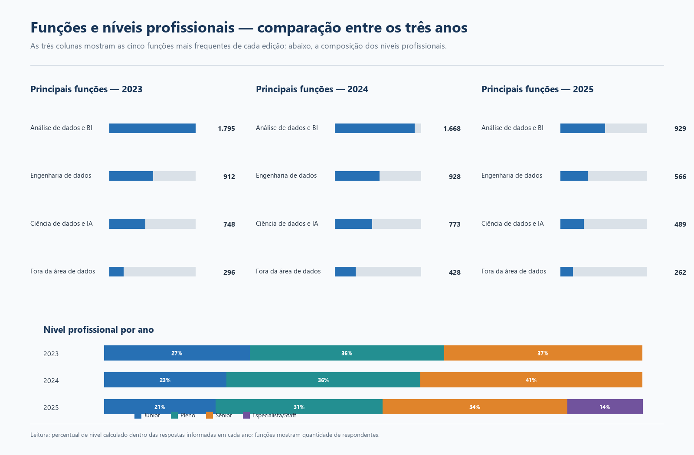
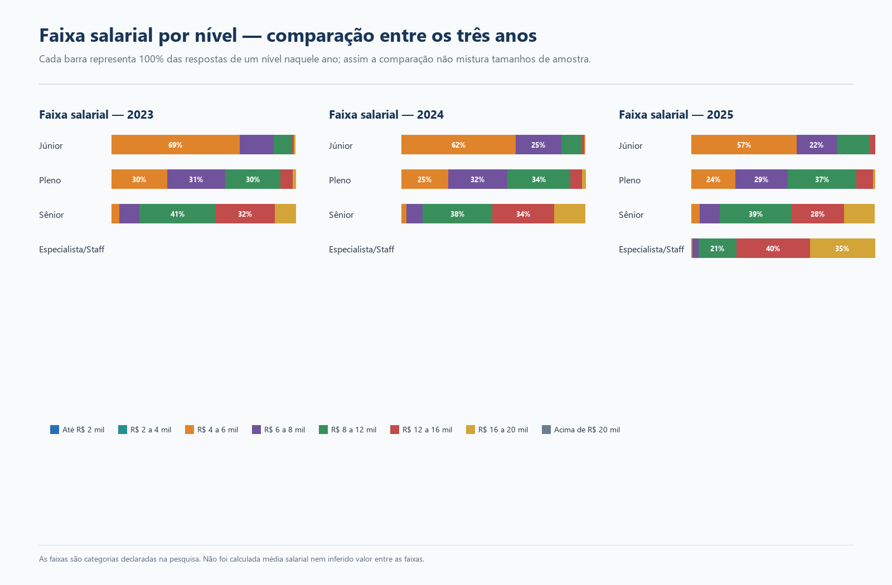
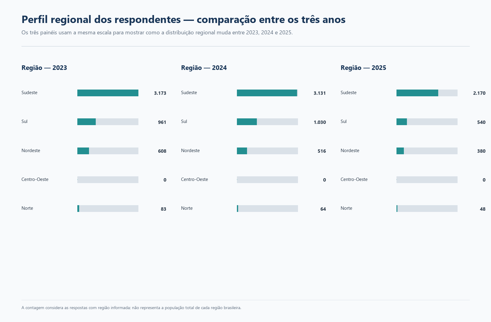
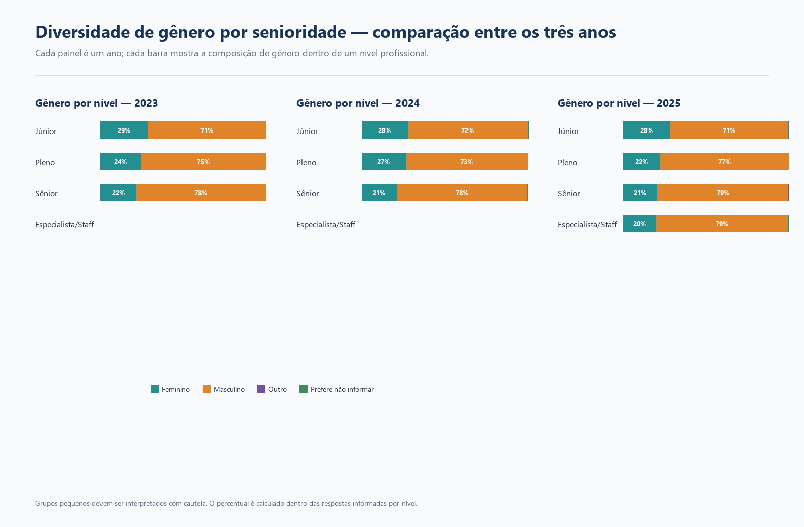
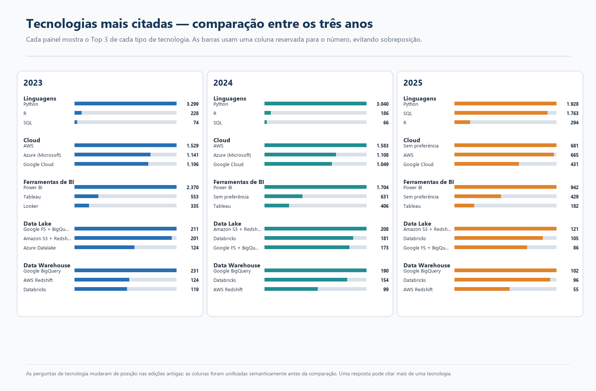
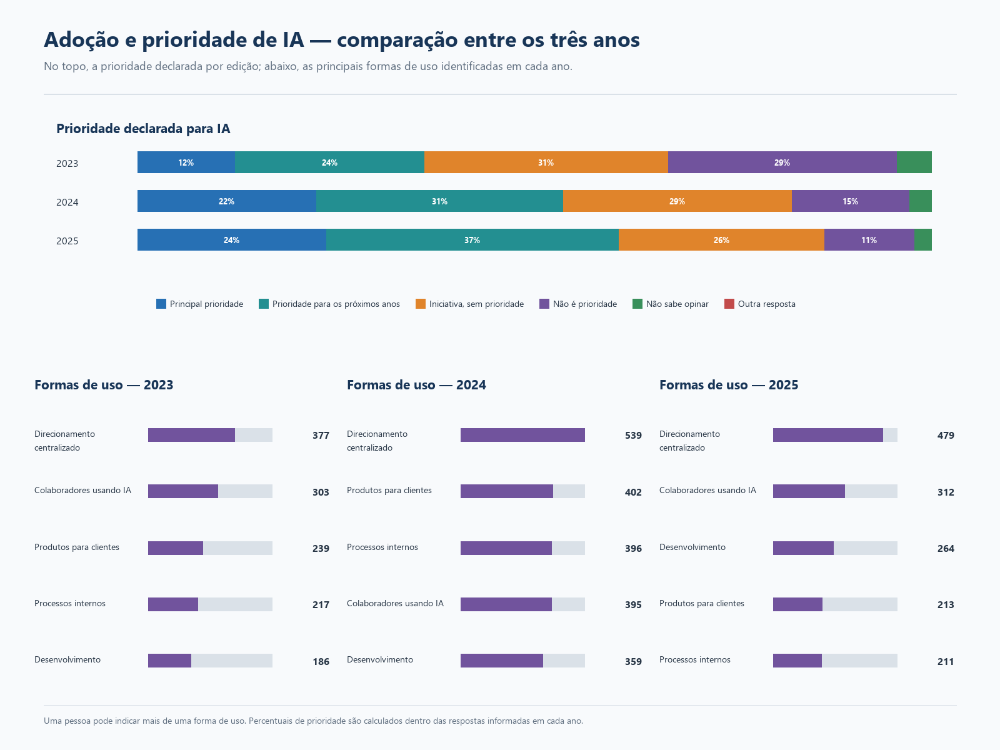
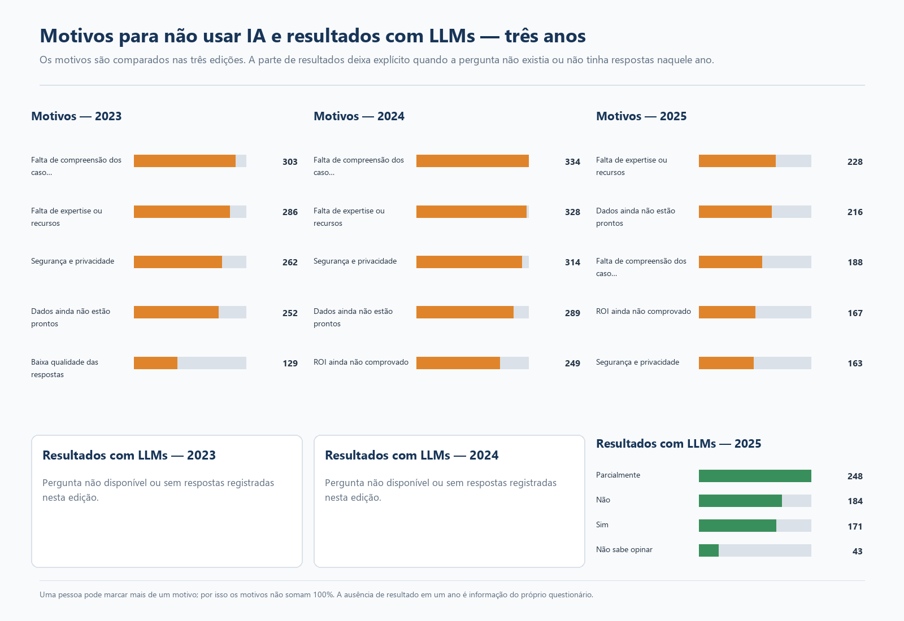

Gráficos Gold — State of Data Brasil
Comparação entre 2023, 2024 e 2025. Respostas únicas usadas: 14,002.
01 Respondentes Por Ano

02 Funcoes E Niveis

03 Faixa Salarial Por Nivel

04 Perfil Regional

05 Diversidade Genero Senioridade

06 Tecnologias Principais

07 Adocao Prioridade Ia

08 Motivos Nao Ia Resultados Llm
